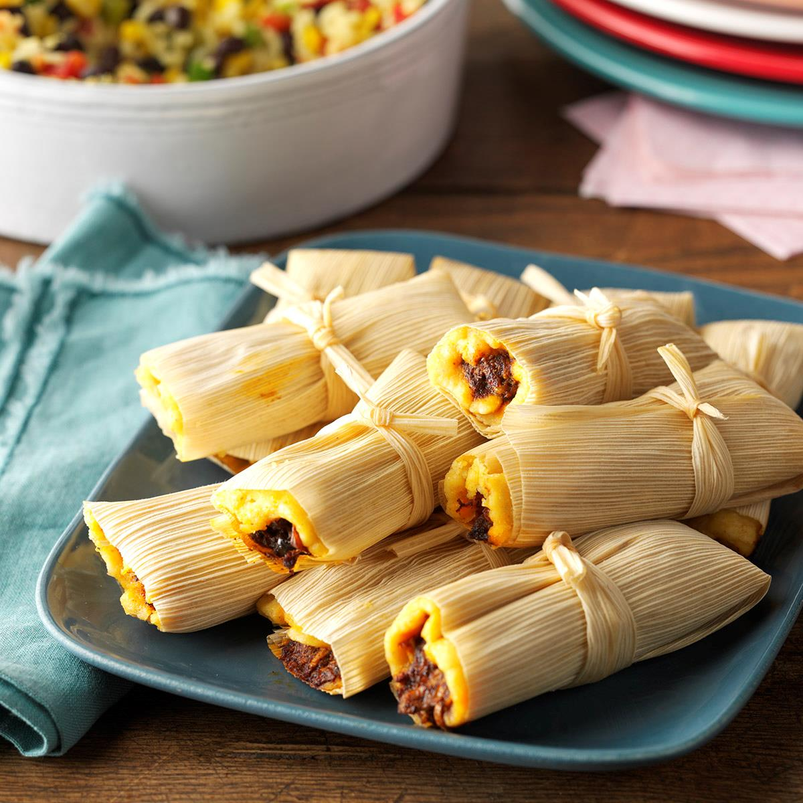

Tamales

Description
This is the best authentic Mexican tamales recipe you will find on the internet.
Keep reading if you want to learn how to mache a rich, flavorful and delicious
meal that the whole family will love!
Ingredients:
- Masa
- Broth
- Baking powder
- Salt
- Lard
- Dried corn husks
Steps:
- Soak the corn husks.
- Prepare the desired filling.
- Make the masa dough.
- Assemble the tamales.
- Cook the tamales.